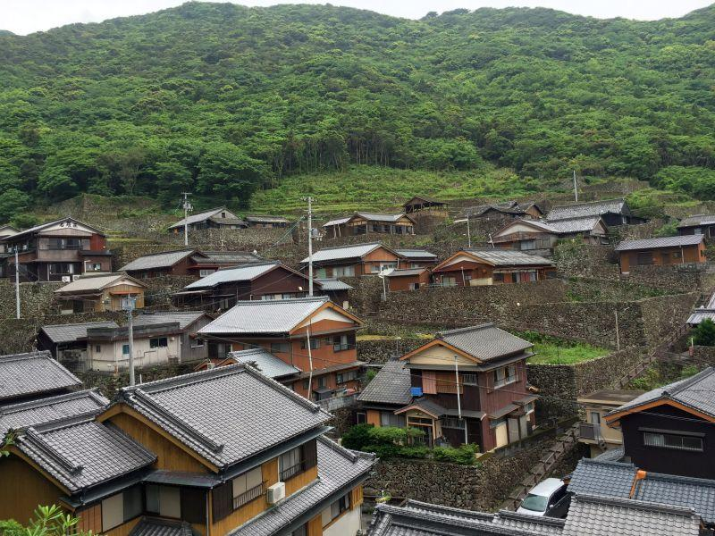
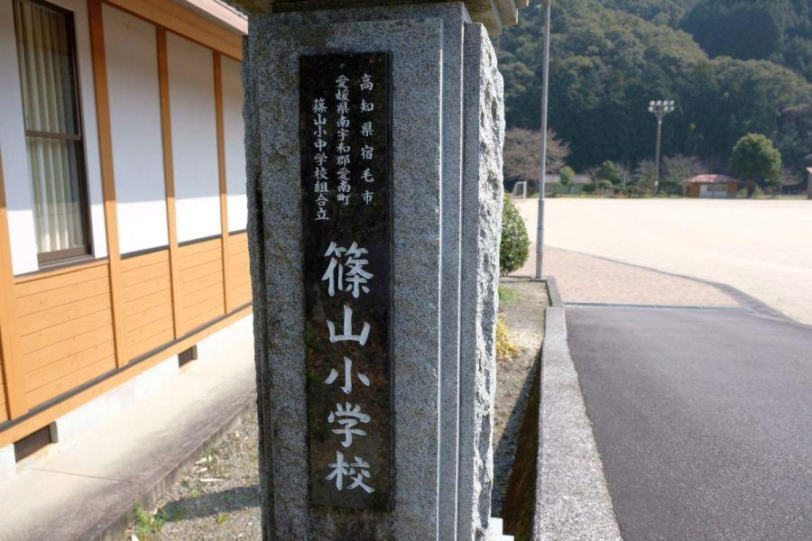

石垣が聳える漁村集落 < 石垣の里外泊 / 愛媛県愛南町 >
愛媛県南部、南予(なんよ)地方。愛南町の海に面したエリアに「外泊(そとどまり)」という集落があります。
その集落は平地に乏しく、海に面した斜面を開墾した時に出た石を積んで石垣を築き、強く吹き付ける潮風から家を守りました。
現在は石垣の里として、特徴的な景観を持つ集落になっています。
石垣の里
外泊集落の入口。斜面を開墾した集落なので、家々に高低差があることがわかります。
集落内の道路が狭く 路地の殆どが石段なので、各家 自家用車は横付けすることができません。突然の雨降りにびしょ濡れになろうが、真夏で汗だくになろうが、徒歩だけが帰宅する手段です。
冷蔵庫等、大型家電の配達はどうするのかなあと思ってしまいます。
集落内で一番広い道を上がってきたところ。この道のみ ある程度の幅員があり、フラットな石畳が敷き詰められていて、この場所までは一応バリアフリー。
と言っても、元々道が広く取られていたわけではなく、突き当りの先に水路が見えるので、ここから下の水路を暗渠化したことで ある程度の幅員を確保できたものでしょう。
例えば これによって小型の消防自動車であれば進入することができるでしょうから、集落として 大きな意義を持っていると思います。
石垣がそびえる路地
メインストリートを離れ、脇道に入ります。
集落内の道幅は、この広さが標準。道の端にグレーチングがはめこまれているので、ここも側溝を暗渠化することで、人間二人分の幅員を確保できています。
集落内に入り 上を見上げると圧巻。
外泊の成り立ちは、元々は隣の中泊(なかどまり)集落が 人口が増えて住居難になり、家督を継がない次男・三男が中泊(＝本家)を離れてこの地へ移り、未開の地を開墾して住居を確保したことに始まる。
斜面を切り開いた際に出土した石を積んで石垣を組んで家を囲い、強風や潮風からそこに建てた家屋を守った。
石が出た
と言っても、その大きさは様々。時代的にそれを運ぶための機械は存在しなかったことでしょう。全て手作業によるものと考えると、幾日かかったことか... 現代人には想像し難い世界が、外泊にはあります。
七蔵垣(しちぞうがき)
外泊の石垣で最大かつ最も美しいとされているのが、集落最上部に位置するこちら。
「七蔵」と言う人物が17歳の時に築いたと伝わります。
この先にある「だんだん館」という施設が、集落最上部。昔の外泊集落の写真が展示されていて、予約すれば 地元のお魚や野菜を使用した定食を頂くことができます。
遠見の窓
石垣の里・外泊集落は上部に登ると 宇和海の眺めはとても良いのですが、
「石垣の集落」
の感じは、あまり伝わってきません。他の場所から石垣集落を俯瞰(ふかん)することができるので、下りながら そこへ移動することにします。
高くそびえる石垣の中央部、家屋の窓の前あたり。石垣が取り払われた部分があります。
「遠見の窓」
夫... 海で漁
妻... 家で夫の帰りを待ちつつ、家事を行う
これは外泊だけでなく、漁村集落はどこも同じ。
家の前に居て外を見ることができる「遠見の窓」を通して海を眺めては、大漁と夫の無事を祈っていたことでしょう。
いくつかの家屋で、石垣の一部が切り取られた「遠見の窓」を見ることができます。
外泊集落

集落を見渡すことができる丘へやってきました。
集落内にある民宿や だんだん館など、外泊集落を一望しつつ、石垣の上に各家が築かれている様子を見ることが出来るこの場所が、外泊集落を眺めるのに最も適しています。
ベンガラ塗の家の壁板も、この地方ならではの家屋です。
元々は分家としてやってきた人々が 苦労して築いた集落が、今や本家集落をしのぐほど個性的で有名な集落になりました。
昨今、お墓参りでさえ 斜面の墓地は敬遠される時代。石垣の里で暮らされている 外泊集落の住民の方々の苦労は、我々には想像することができないことばかりだと察します。
他の地域では見ることができない景観。末永く存続して欲しい、石垣の里・外泊集落です。
石垣の里・外泊
< 自家用車 >
高松駅から 約4時間、287km
松山空港から 約2時間15分、145km
※ 主な地点からの最速・最短距離
関連・近隣記事

2017,11/21 歩いて県境越えを実感できる古道・遍路道 < 松尾峠 / 高知県宿毛市・愛媛県愛南町 >

2017,12/19 印象的な銀杏の絨毯と、古堂がある寺院 < 禅蔵寺薬師堂 / 愛媛県 >

2017,12/25 ユニークな名前のバス停 < 土居仲、嵐 / 愛媛県 >

2018,1/24 県境越えを越えたことを知る手がかりあれこれ < 篠川橋 / 高知県宿毛市・愛媛県愛南町 >

2018,4/6 日本で唯一現存する紫電改。平和へのメッセージ < 紫電改 / 愛媛県愛南町 >

2019,3/2 日本一長い学校名 < 高知県宿毛市愛媛県南宇和郡愛南町篠山小中学校組合立篠山小学校 / 愛媛県愛南町 >